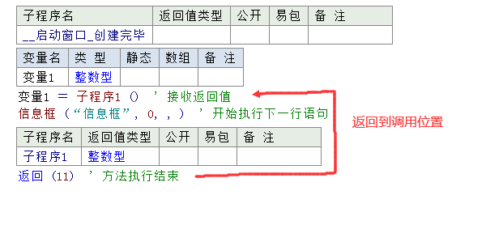
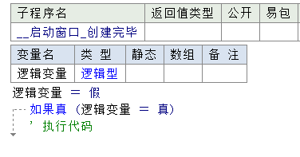
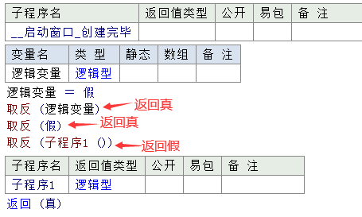
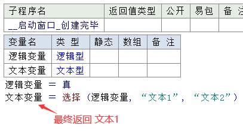
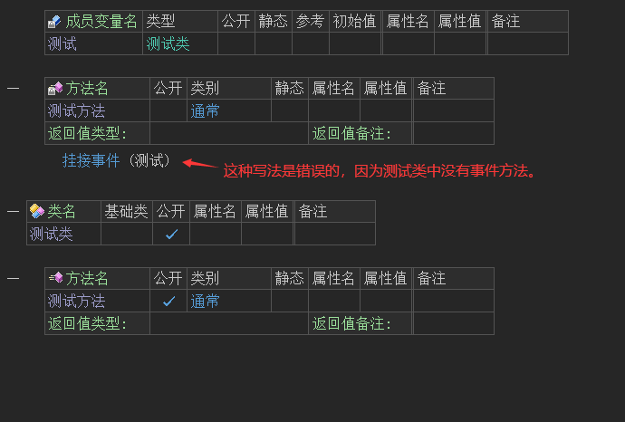
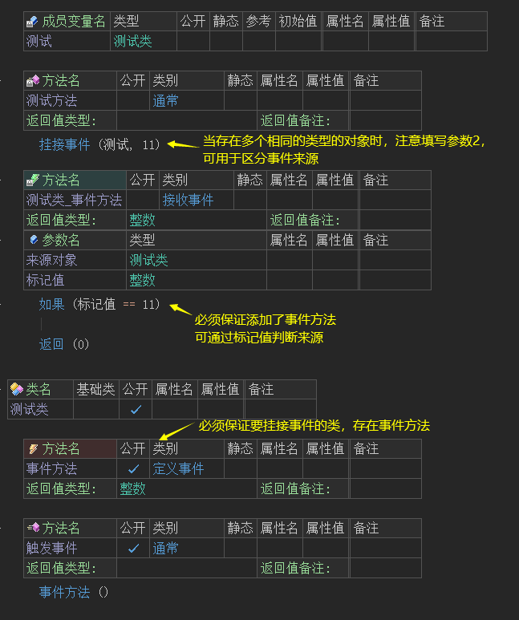

1、算数运算关键字
在易语言中提供了一些算数运算的关键字，可用来代替输入数学运算符号，在火山中未提供这些关键字，需要直接输入数学运算符号。
对照表如下：
易语言 火山 注释 相乘 * 表示乘法运算 相除 / 表示除法运算 整除 无 火山中无整除运算符 求余数 % 表示求余运算 相加 + 表示加法运算 相减 - 表示减法运算 负 - 表示取负数运算
2、逻辑比较关键字
在易语言中提供了一些逻辑比较的关键字，可用来代替输入逻辑比较符号，在火山中未提供这些关键字，需要直接输入对应的符号。
对照表如下：
易语言 火山 注释 等于 == 表示左右两边参数相等 不等于 != 表示左右两边参数不相等 小于 < 表示左侧参数小于右侧参数 大于 > 表示左侧参数大于右侧参数 大于或等于 >= 表示左侧参数大于或等于右侧参数 小于或等于 <= 表示左侧参数小于或等于右侧参数 近似等于 无 表示约等于，火山中无此符号。 并且 && 当左侧参数和右侧参数均为逻辑值真时，最终整个表达式的结果返回真。 或者 || 当左侧参数或右侧参数其中任意一个的逻辑值为真，最终整个表达式的结果返回真。
3、其它关键字
3.1 返回
本关键字与易语言中的关键字作用一致，调用后当前方法会执行结束，并且会返回到调用语句处。如果有返回值，则会返回一个值到执行语句处。
易语言示例如下：
当“子程序1()”被“返回()”方法返回后，会返回到当前方法调用的位置，如果此位置定义了变量来接收返回值，则首先会执行这个赋值操作，然后才会执行下一行的“信息框()”方法。

火山示例如下：
当“测试方法()”被“返回()”方法返回后，会返回到当前方法调用的位置，如果此位置定义了变量来接收返回值，则首先会执行这个赋值操作，然后才会执行下一行的“信息框()”方法。
返回的额外输入字：
除了使用全、首拼输入外，还可以使用“return”来输入。
3.2 逻辑值
本关键字与易语言一致，只有“真”和“假”，主要用于表示逻辑型。
使用方式如下，用于变量、常量、赋值以及条件判断操作。
易语言演示：

火山演示：
真/假的额外输入字：
除了使用全、首拼输入外，“真”还可以使用“ture”来输入，“假”还可以使用“false”来输入。
3.3 取反
本关键字与易语言中的关键字作用一致，可以对逻辑值进行取反操作。
易语言示例如下:

火山示例如下:
本方法的参数可以提供逻辑立即数，变量，方法等，只要其数据类型为逻辑型即可。
3.4 选择
本关键字又称为三目运算，其作用与易语言中的关键字一致，是根据参数1提供的逻辑值，从而决定是返回参数2还是返回参数3。
易语言示例如下：
当逻辑变量为真时，最终返回“文本1”。

火山示例如下：
示例中的“文本变量”其内容最终为“文本1”，因为“选择()”方法的参数1提供的逻辑值为真。
3.5 位运算
位运算对照表如下：
易语言 火山 注释 位取反 位取反 将指定数值每一个比特位的值取反后返回 位与 位与 在火山中，如果要对多个整数值进行位与，可使用“连续位与”方法。 位或 位或 在火山中，如果要对多个整数值进行位或，可使用“连续位或”方法。 位异或 位异或 在火山中，如果要对多个整数值进行位异或，可使用“连续位异或”方法。 左移 位左移 将某整数的数据位左移指定位数，返回移动后的结果。 右移 位右移 将某整数的数据位右移指定位数，返回移动后的结果。


4、火山新增关键字
4.1 名称关键字
4.1.1 属于
本关键字是一种判断关键字，关键字的左侧参数提供实例对象、右侧参数提供数据类名。用于返回左侧的对象是否为右侧类或者其直接/间接继承类的实例对象。
最终判断结果会返回逻辑型，如果符合返回真，即表示左侧对象能安全转换到右侧类数据类型。
注意: 左侧对象的数据类型必须为类，而且必须与右侧类之间存在继承/被继承关系或者等于右侧类本身才会符合条件。
如下图所示：
利用“属于”来判断“测试2对象”是否属于“测试类1”，此处必然返回真。
因为“测试类2”继承了“测试类1”，既然继承了测试类1，那么必然存在测试类1，因此这个属于条件必然是成立的。
最终结果也证明“测试2对象”是属于“测试类1”的。
除了继承关系相等外，如果类型相等本条件也会返回真。
如下图所示：
用“测试2对象”和“测试类1”进行判断，其结果也必然是会返回真，因为类型是完全一致的。
最终结果也证实了这一点。
全部比较结果如下图：
如果符合条件就可以进行强制转换操作，让左侧对象强制转换为右侧类型。
如下图所示：
属于的额外输入字：
除了使用全、首拼输入外，还可以使用“instanceof”来输入。
4.1.2 空对象
用作代表空对象，可以匹配所有非常量类的类数据类型以及文本型。
需要注意的是，当对象实例为空对象时，这个对象将不能进行任何操作。
如下图所示：
假设某个方法提供了一个“测试类”的参数，并且默认值为空对象，此时如果想要操作这个参数数据，首先需要判断其是否为空对象，然后在执行相应的方法操作。
空对象除了用于判断之外，还可以用于赋值，传参如下图所示：
空对象的额外输入字：
可以使用“null”输入空对象。
4.1.3 父对象
用于表示在类成员方法中代表所处类的父类(基础类)对象。
父对象主要是用作当基础类中存在与本类中相同名称的方法(譬如虚拟方法)时强制调用基础类的方法。
如下图所示：
也可用于调用父类中的通常方法，如下图所示：
在“测试类2”的基础类为“测试类1”，然后就可以通过“父对象”调用“方法1()”。
在窗口被创建完毕时调用“测试类2”的通常方法。
最终会执行“测试类1”中的“方法1”，并弹出一个信息框。
当然在实际开发过程中，“父类”(基础类)的方法支持直接输入调用，可以省略“父对象”的关键词。
如下图所示：
注意: 如果语句所处方法为静态方法，由于此时根本不存在当前类的实例对象，所以不能使用本关键字。
如下图所示：
父对象的额外输入字：
可以使用“super”输入父对象。
4.1.4 本对象
本对象表示当前代码语句所处类的对象本身。
如下图所示：
例如，在“测试类1”中使用本对象就表示是“测试类1”的对象本身。同理，如果有一个类叫“测试类2”，并且在测试类2中使用本对象，那么此时的本对象就表示的是“测试类2”的对象本身。
由此可以得出，如果某个方法的参数是当前类对象的时候就可以提供“本对象”进行传递参数。
如下图所示：
火山视窗的通用对话框的“打开()”方法，需要提供一个“窗口”对象。
在使用这个方法时，如果当前类是“窗口”或者其基础类是“窗口”时都可以使用“本对象”进行进行传递参数。
如果在其它类中调用这个“通用对话框”的“打开()”方法，就不能使用“本对象”进行传递参数。
如下图所示的写法是错误的：
正确的写法如下，可通过传递“窗口”参数来解决，其它类中使用的问题。
需要注意的是，如果在使用本对象时当前方法是静态方法，则不支持使用本对象关键字，因为静态方法中不存在当前对象实例。
本对象的额外输入字：
可以使用“this”输入本对象。
4.2 方法关键字
4.2.1 挂接事件
本方法用于动态挂接指定对象的事件，共有两个参数，如下：
参数1：提供要挂接的对象名称。
参数2：提供整数标记值，当多个类型相同的对象同时挂接时，可以在事件接收方法的“标记值”参数中获取到此标记，从而用于区分对象来源。
1. 如何挂接事件？
如果想要指定对象进行“挂接事件”操作，必须满足以下条件：
(1) 其对象必须拥有“事件定义方法”。
如下图所示的“测试类”想要进行挂接事件的写法是错误的，因为“测试类”中并没有任何事件。

(2) 使用本方法后必须添加指定对象的接收事件方法。
如下图所示，使用“挂接事件()”方法后，必须添加“测试类”的接收事件方法，用于接收事件。
注意：如果存在多个相同数据类型的对象需要挂接事件，可以通过填写挂接事件的参数2，来判断事件来源。

2. 什么时候需要挂接事件？
(1) 在火山视窗中局部变量不可以进行挂接事件，因为其对象实例会立刻销毁，因此如果某类中存在事件应定义为成员变量。
(2) 动态创建对象需要手动挂接事件。
如下图所示，动态创建一个按钮时需要挂接事件：
运行后可看到动态创建的按钮也可以正常点击：
(3) 当对象事件需要发送到其它类中使用时，需要挂接事件。
如下所示“组件布局器”中的按钮组件事件想要在窗口中触发事件，就需要进行挂接事件操作。
4.2.2 取消事件挂接
不再将指定对象所支持的事件挂接到当前类对象中的对应事件接收方法上。
无论是自动挂接事件的类成员对象变量，还是手动调用挂接事件关键字挂接的对象，均可以调用本关键字取消其事件挂接。事件挂接一旦取消，该对象的事件将不会再被接收到，谨慎使用。
如下图所示调用即可取消所有事件：